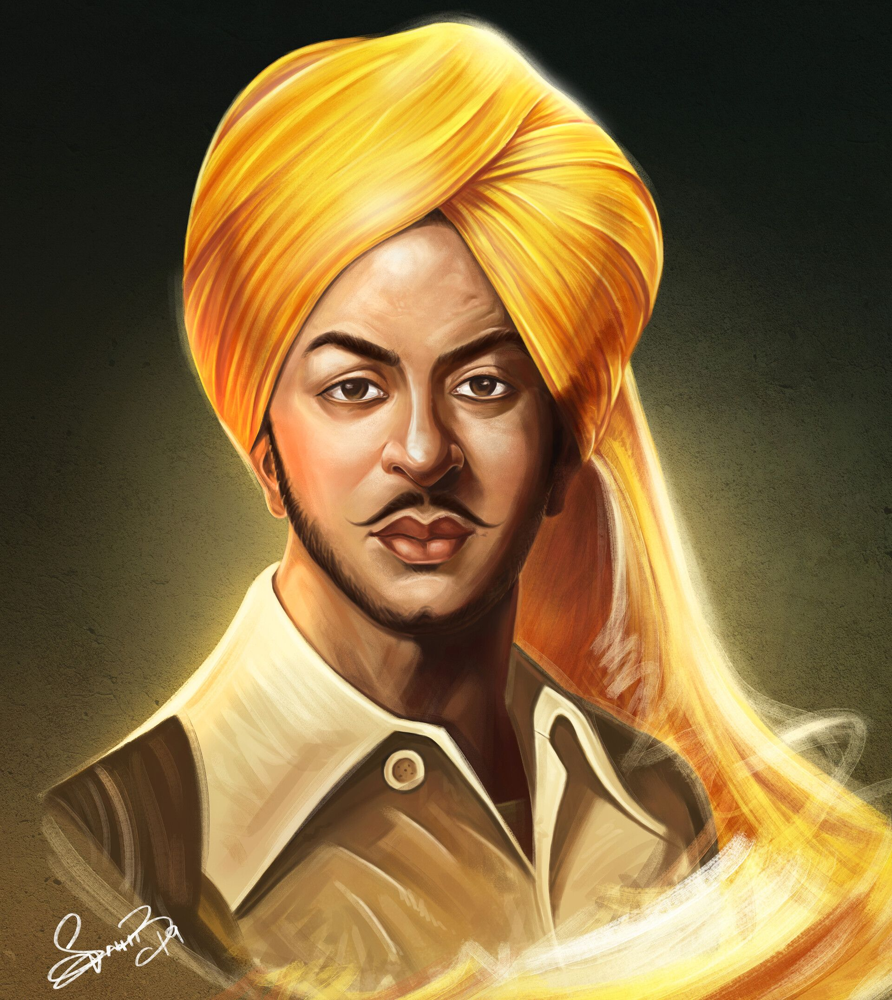

Saheed Bhagat Singh
27 September 1907 – 23 March 1931
Indian revolutionary freedom fighter
Bhagat Singh was a charismatic Indian revolutionary and a hero of the early 20th-century Indian independence movement. He was a vocal critic of British rule in India and was involved in two high-profile attacks on British authorities. He participated in the mistaken murder of a junior British police officer in what was to be retaliation for the death of an Indian nationalist.He later took part in a largely symbolic bombing of the Central Legislative Assembly in Delhi and a hunger strike in jail, which—on the back of sympathetic coverage in Indian-owned newspapers—turned him into a household name in the Punjab region, and after his execution at age 23 into a martyr and folk hero in Northern India.
Key Highlights
- The Jallianwala Bagh massacre in 1919 profoundly influenced Bhagat Singh, igniting his resolve to fight against British rule.
- Bhagat Singh joined the Hindustan Republican Association (HRA), later renamed the Hindustan Socialist Republican Association (HSRA), and became a prominent figure in the revolutionary movement.
- In 1928, Bhagat Singh and his associates plotted to kill British police officer James A. Scott in retaliation for the death of Lala Lajpat Rai, but mistakenly assassinated J.P. Saunders instead.
- During his imprisonment, Bhagat Singh led a hunger strike demanding better treatment for Indian prisoners, which garnered widespread support and attention.
- Bhagat Singh was deeply influenced by socialist ideology and believed in the establishment of a society based on equality and justice, free from exploitation.
- He was an avid reader and writer, contributing articles to various revolutionary newspapers, where he expressed his views on British colonialism and the need for armed struggle.